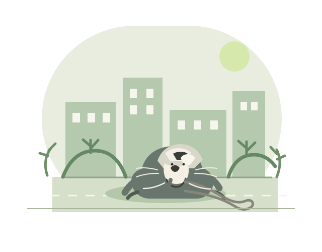

É nativo
Faz parte da fauna brasileira e dos ecossistemas urbanos.
Vida silvestre, bem pertinho
Timbús são visitantes importantes dos nossos bairros. Com informação e cuidado, a gente ajuda esses pequenos vizinhos a seguir seu caminho em segurança.
Viu um timbú? Mantenha a calma e observe de longe.

Pequenos encontros. Grandes cuidados.Prazer, timbú!
Conhecido também como saruê ou gambá-de-orelha-preta, o timbú é um marsupial nativo. À noite, pode aparecer em quintais e ruas em busca de alimento ou abrigo.
Ele não está invadindo: está tentando sobreviver em um ambiente que também é o nosso. Conhecer seus hábitos é o primeiro passo para uma convivência respeitosa.
Descubra como conviverFaz parte da fauna brasileira e dos ecossistemas urbanos.
Costuma circular ao anoitecer, em busca de alimento.
Observar sem tocar é mais seguro para todos.
Encontrou um timbú?
Na maioria das vezes, ele só precisa de espaço para ir embora.
Precisa de ajuda?Recolha crianças e animais domésticos. Não tente pegar, encurralar ou alimentar o animal.
Se for seguro, deixe o ambiente tranquilo e permita que ele se afaste por conta própria.
Se estiver ferido, preso ou em risco, contate o serviço de fauna silvestre ou órgão ambiental da sua região.
Pequenas atitudes, todo dia
Mantenha lixeiras fechadas e evite deixar ração ou restos de comida do lado de fora.
Não tente capturar ou transportar. O manejo deve ser feito por profissionais capacitados.
Ajude a desfazer mitos e incentive uma relação respeitosa com a fauna local.
Cada situação é única
O contato de resgate varia conforme o município. Procure o órgão ambiental local ou consulte os canais oficiais do IBAMA para receber orientação.
Acessar canais do IBAMA Informe a localização e a condição do animal. Não tente capturá-lo.